Vincent's Canvas
Experience the vibrant world and poignant life of Vincent van Gogh.
A library of animated stories where art, science, and play come alive.
Experience the vibrant world and poignant life of Vincent van Gogh.

Delve into the vibrant, symbolic, and deeply personal world of Frida Kahlo.

Explore the boundless curiosity and breathtaking genius of Leonardo da Vinci.
Witness the birth of Pointillism as thousands of individual dots of color merge to form a luminous, living masterpiece.

Uncover the genius of Wolfgang Amadeus Mozart in this interactive musical journey.

Journey through the powerful emotions and indomitable spirit of Ludwig van Beethoven.

Discover the intricate structures of Johann Sebastian Bach's timeless masterpieces.
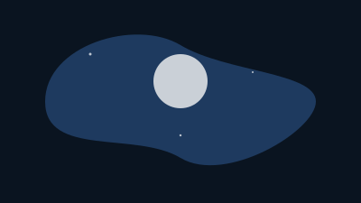
Immerse yourself in a dreamlike world where Debussy's iconic 'Clair de lune' paints a shimmering, high-fidelity scene of moonlight and water.
Ascend an interactive Art Deco skyscraper in this vertical scrollytelling journey.

Explore a "living blueprint" of a Frank Lloyd Wright-inspired home.

Step into the 19th-century Parisian salon of the father of haute couture.
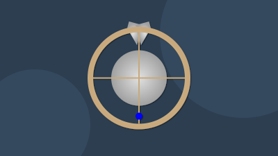
Explore the beautiful, intricate world of a mechanical watch in this "living blueprint".

A narrated journey into Edgar Allan Poe's "The Raven."

Experience Poe's classic tale of madness through interactive sound and visuals.

An atmospheric homage to the cinematic language of Akira Kurosawa.
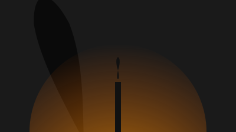
Experience Plato's foundational allegory in a new light.

A cinematic scroll telling the legend of Sun Wukong.

Discover the vibrant traditions of Mexico's Day of the Dead.

Join Anansi the spider in this interactive West African folktale.

Follow the legendary Peach Boy on an epic quest in this Japanese folktale.
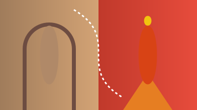
Journey from the Ottoman Empire to the streets of Mexico City to uncover the incredible story of this iconic taco.
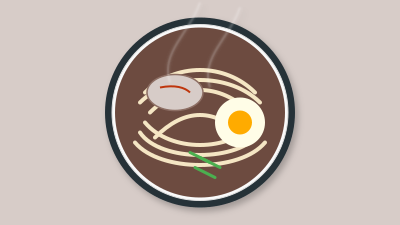
A culinary meditation. Learn the art of crafting each component of a perfect bowl of Japanese ramen in this interactive, step-by-step guide.
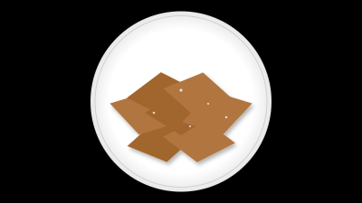
Embark on a culinary journey to Sicily with this interactive recipe.

Learn to make this simple Italian pasta dish with our interactive guide.
Dive into a rain-slicked, neon-lit metropolis where ancient characters are written in electric light. A sensory journey through tradition and hyper-modernity.
Journey through a high-fidelity vision of Stuttgart, where deep parallax forests give way to glowing automotive blueprints in a story of nature and innovation.

Journey through the vibrant city of Shanghai, from the Bund to Pudong.

An interactive story about the hidden life of our food and sustainability.
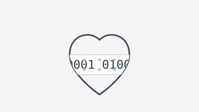
From abstract theory to a code-breaking weapon to the birth of AI, discover the universal machine that changed the world.

Uncover the discoveries of Marie Curie in this story of scientific brilliance.

Peer through Galileo's telescope and witness discoveries that reshaped the cosmos.

Sail with Charles Darwin and uncover the theory of evolution.

Unravel the mysteries of gravity with Isaac Newton.

Discover the tiny building blocks of matter by creating simple molecules.

An interactive journey to understand the magic of Pi.

A "scrollytelling" journey into a computer's core.

Unravel the mystery of blockchain technology with interactive visuals.

Listen to our changing climate through a symphony of data.
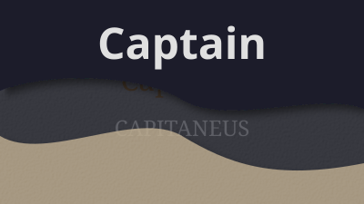
Uncover the secret history of a word in this interactive etymological timeline.

Explore the bridge languages that connect people across cultures.

Dive into the theories that explain how language works.

Explore the science of how we learn new languages.

Dive into the quirky world of English idioms.

Explore how metaphors structure our thoughts.

Test your eye for detail on art masters.

Tune your ears for this interactive audio quiz.

Test your knowledge with sounds, visuals, and fun facts!
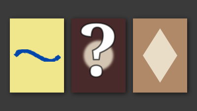
Test your artistic eye! This interactive quiz challenges your knowledge of Vincent van Gogh's work through a series of unique visual puzzles.
Test your musical ear! This interactive audio quiz challenges you to identify musical styles, instruments, and concepts from the Classical era.
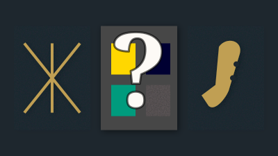
Put your knowledge of the Art Deco style to the test! This examination challenges you to identify the visual and sonic signatures of the Jazz Age.
Our quizmasters are crafting new puzzles to test your expertise. Prepare to put your knowledge to the test in another fascinating subject!
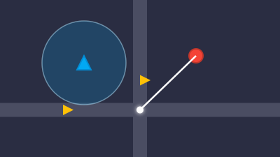
Defend your base in this minimalist arcade-style tower defense.

Engage in a celestial dance of risk and reward.

Defend Earth from the relentless alien horde!

Relive the dawn of video games with this arcade classic.

Navigate a new, procedurally generated labyrinth every time you play.

Embark on an interactive fantasy quest!

Guide a generative artist to create unique, abstract paintings.

Become a celestial photographer and generate beautiful star trail images.

Click the grid to create looping melodies in this interactive music sequencer.

Learn the timeless art of origami with an interactive, step-by-step guide.

Become the architect of your own solar system in a real-time physics simulation.

Observe and influence a pocket pond and watch the laws of nature unfold.
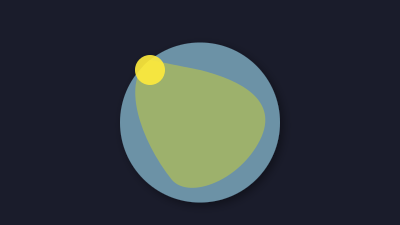
Adjust climate sliders and watch your world transform in real-time.
Uncover the scientific magic behind how food gets its flavor.

A guided multisensory journey for relaxation and breathwork.
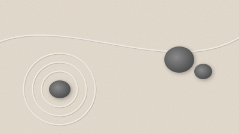
Shape your own tranquil space in this interactive Zen garden.

A mesmerizing, interactive lava lamp for passive relaxation.

Weave a unique, luminous dreamscape of color and sound.
Wubba Lubba Dub Dub! Fire the portal gun and generate a new, bizarre "Interdimensional Cable" show from a random dimension.
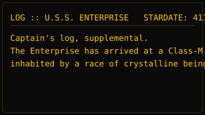
Generate unique, classic sci-fi log entries with a single click.

Become a co-author of legend by providing the hero, treasure, and beast.

Click to see the Simpsons family in a variety of classic and new couch gags.